レオネル攻略 - スキル・タリスマン・レルム | ヒーローウォーズ アライアンス
- 著者: Alexandre Domingos. .
レオネルは二本の剣で戦いますが、本当の武器は攻撃のタイミングです。クリティカルが発生するたびに運命の印を付与して敵のエネルギーを削り、勝敗を決める必殺技を遅らせられます。私の目には、彼は単なる物理アタッカーではありません。敵のHPだけでなく、戦闘のリズムそのものを崩すヒーローです。
このガイドでは、レオネルの4つの通常スキル、唯一のタリスマン、レルムスキル、育成優先度、対策、相性のよいヒーロー、おすすめ編成を解説します。レルム任務で彼を解放している途中なら、資源を使う前に強さの仕組みを理解できます。


レオネル攻略 目次
- レオネルとは？
- 現環境での総合評価
- 長所と短所
- タリスマン装備時の最大ステータス
- タリスマンガイド
- スキル育成優先度
- レルムスキル
- おすすめスキン
- アーティファクト優先度
- グリフ優先度
- レオネル対策
- レオネルのシナジー
- おすすめ編成
- まとめ
ヒーローウォーズ アライアンスのレオネルとは？
レオネルは自然の道に属する前衛の戦士です。クリティカル率、クリティカルダメージ、シールドへの特効、エネルギー減少が一つの流れになっています。王者の咆哮でクリティカルを強化し、捕食者の跳躍でシールド持ちを攻め、運命の印でクリティカルをエネルギー減少へ変えます。

- メインクラス: 戦士
- 配置: 前衛
- 主要ステータス: 素早さ
- 派閥: 自然の道
- レルムクラス: 歩兵
- ソウルストーン入手方法: プレイヤーレベル80で解放されるレルム任務
- シナジー: オヤ、ヤスミン、グース、バーナ
シールドや必殺技の発動タイミングに依存する編成に対して、レオネルは特に危険です。前衛なので味方の保護は必要ですが、クリティカルの連鎖が始まると、敵は重要スキルを使う前にエネルギーを失います。
レオネルの長所と短所 - ヒーローウォーズ アライアンス
長所
- 高い物理バーストとクリティカルダメージ性能。
- 運命の印は敵のエネルギーを削り、複数回重ねられる。
- 捕食者の跳躍はシールド中の敵に式上3倍のダメージを与える。
- 影の双剣の発動中はレオネルをターゲットにできない。
- クリティカルと生存を支援するヒーローとの相性がよい。
短所
- 前衛配置のため、バーストダメージと妨害を受けやすい。
- エネルギー減少はクリティカル攻撃の発生に依存する。
- ソウルストーンなどの育成資源はレルムに依存する。
- レルムはプレイヤーレベル80から利用可能。
忘れられた道のタリスマン装備時のレオネル最大ステータス
| ステータス | 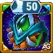 Talisman 1: 忘れられた道のタリスマン |
|---|---|
 知力 知力 | 3,527 |
 素早さ 素早さ | 16,622 |
 力 力 | 5,172 |
 HP HP | 718,538 |
 物理攻撃 物理攻撃 | 78,303 |
 魔法攻撃 魔法攻撃 | 25,687 |
 アーマー アーマー | 24,232.7 |
 魔法防御 魔法防御 | 10,921.5 |
 タフネス タフネス | 1,860 |
 アーマー貫通 アーマー貫通 | 28,674 |
 クリティカル率 クリティカル率 | 8,822.8 |
 クラッシング クラッシング | 4,363 |
レオネルのタリスマンガイド - ヒーローウォーズ アライアンス
現在、レオネルのタリスマンは忘れられた道のタリスマンの1つだけです。まだ2種類から選ぶ必要はないため、使用条件を満たしたら装備するのが明確な選択です。
忘れられた道のタリスマン
メインスロットは素早さ +2,000です。素早さはレオネルの主要ステータスなので、さらに物理攻撃 +6,000とアーマー +2,000を得ます。3つのリロールスロットは合計値で考えましょう。合計はHP +181,500です。
| Talisman | 主要ステータス | リロール合計ボーナス |
|---|---|---|
| 忘れられた道のタリスマン | 素早さ +2,000 |
HP +181,500 |
Alexandre Tips: このタリスマンはレオネルと非常に相性がよいです。素早さは影の双剣、捕食者の跳躍、王者の咆哮に使われる物理攻撃を伸ばし、HP合計は前衛での生存を助けます。各リロールを個別に見るのではなく、HPの合計値を重視してください。
レオネルのスキル育成優先度 - ヒーローウォーズ アライアンス
現在、レオネルにはレジェンダリースキルがありません。育成対象は以下の4つの通常スキルだけです。実戦への影響を考えると、王者の咆哮と捕食者の跳躍を優先し、その後に影の双剣と運命の印を強化します。
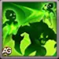
Skill 1 - 影の双剣 (Ultimate)
ゲーム内説明: 影の中へ消え、敵の背後に現れながら連続攻撃を行う。攻撃するたびに前の一撃よりも高いダメージを与える。スキル発動中、レオネルは敵の攻撃やスキルの対象にならない。
スキル解説: レオネルのバーストと安全時間を作るスキルです。ターゲットにされない間に敵の攻撃を避け、連続攻撃で圧力をかけます。タリスマン装備時、初撃は94,727.25（75% Phys. Atk. + 36,000）、記載された各追加ヒットは57,151.5（50% Phys. Atk. + 18,000）です。
タリスマン1装備時の式: 忘れられた道のタリスマン
- 計算式 - 初撃: 物理ダメージ: 94,727.25 (75% Phys. Atk. + 36,000)
- 計算式 - 追加ヒット: 1ヒットの物理ダメージ: 57,151.5 (50% Phys. Atk. + 18,000)
スキル動作情報
- アニメーション遅延: 0.5 秒
- 射程: 3,000
- キーワード: Physical Damage, Untargetable, Can't be copied
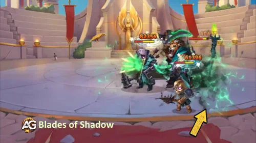
育成優先度: 高 - 王者の咆哮と捕食者の跳躍の後に育成します。バーストと一時的な安全を得られますが、レオネル全体の性能にはクリティカル循環とシールド特効のほうが大きく影響します。
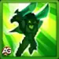
Skill 2 - 捕食者の跳躍
ゲーム内説明: 最も近い敵を2回攻撃する。シールド中の敵にはダメージが増加し、運命の印を習得済みならその印を付与する。
スキル解説: 捕食者の跳躍は、レオネルをシールド編成に使う最大の理由です。通常は1ヒット108,303（100% Phys. Atk. + 30,000）、2ヒット合計216,606。シールド中の敵には1ヒット324,909（300% Phys. Atk. + 90,000）、防御適用前の合計649,818です。運命の印も付与してエネルギー減少へつなげます。
タリスマン1装備時の式: 忘れられた道のタリスマン
- 計算式 - 通常ヒット: 1ヒットの物理ダメージ: 108,303 (100% Phys. Atk. + 30,000)
- 計算式 - シールド中の敵: 1ヒットの物理ダメージ: 324,909 (300% Phys. Atk. + 90,000)
スキル動作情報
- 初回クールダウン: 5 秒
- クールダウン: 12 秒
- アニメーション遅延: 0.7 秒
- 射程: 100
- ヒット数: 2
- キーワード: Physical Damage, Mark, Shield Punish
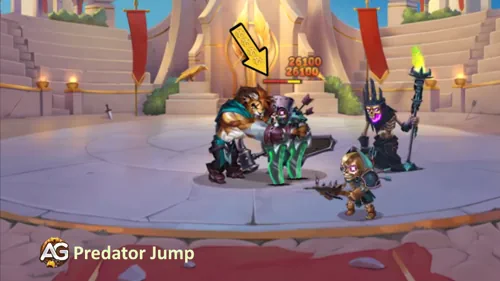
育成優先度: 非常に高い - 特にシールド中の敵に対する、レオネル最強の直接ダメージ強化です。王者の咆哮と並行して上げ、即時火力と運命の印の準備を強化してください。
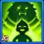
Skill 3 - 王者の咆哮
ゲーム内説明: レオネルと、物理攻撃が最も高い味方のクリティカル率を上昇させる。レオネル自身の物理攻撃が最も高い場合、効果はレオネルだけに適用され、クリティカル率とクリティカルダメージがさらに上昇する。
スキル解説: 王者の咆哮は、運命の印を発動するクリティカルを増やす中心スキルです。タリスマン装備時、共有バフはクリティカル率 +29,490.9（30% Phys. Atk. + 6,000）。レオネルの物理攻撃が最も高ければ、個人バフは+70,727.25（75% Phys. Atk. + 12,000）となり、クリティカルダメージは300%になります。
タリスマン1装備時の式: 忘れられた道のタリスマン
- 計算式 - 共有バフ: クリティカル率上昇: 29,490.9 (30% Phys. Atk. + 6,000)
- 計算式 - 単独バフ（レオネルのみ）: クリティカル率上昇: 70,727.25 (75% Phys. Atk. + 12,000)
- クリティカルダメージ（単独）: 300%
スキル動作情報
- 初回クールダウン: 3 秒
- クールダウン: 12 秒
- アニメーション遅延: 0.8 秒
- 持続時間: 7 秒
- 射程: 100
- キーワード: Buff, Crit Hit Chance, Critical Damage
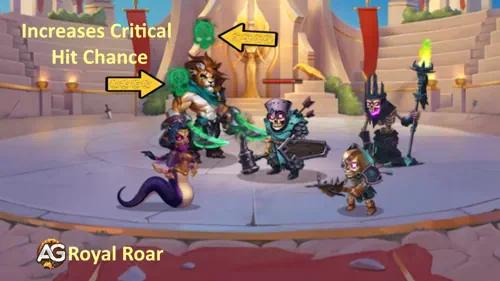
育成優先度: 非常に高い - 最初、または捕食者の跳躍と並行して育成します。レオネルのダメージと運命の印の発動頻度を高め、物理攻撃が最も高い味方も支援できます。
Alexandre Tips: 戦闘前にチーム全員の物理攻撃を確認してください。レオネルが最も高ければ、王者の咆哮が彼だけに集中して強力な個人ボーナスを得ます。味方のほうが高い場合でも、特にヤスミンのようなクリティカルアタッカーとの共有バフは強力です。
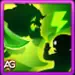
Skill 4 - 運命の印
ゲーム内説明: クリティカル攻撃で敵のエネルギーを減少させる印を付与する。レオネルのクリティカルダメージ倍率が高いほど効果が強くなる。印は複数回重ねられる。
スキル解説: 運命の印は、レオネルのクリティカルを間接的な妨害へ変えます。印は持続中に毎秒75エネルギーを削り、複数回重ねられます。スタンではありませんが、必殺技に必要なエネルギーを奪って発動を遅らせたり防いだりできます。
- エネルギー減少: 75 Energy per second
- 発動条件: クリティカル攻撃
- 重複: 複数の印を同時に付与可能
- 効果上昇: クリティカルダメージ倍率に応じて効果が上昇
スキル動作情報
- 持続時間: 5.01 秒
- ヒット数: 20
- キーワード: Mark, Energy Drain, Passive
- 注意: 敵のレベルが120を超える場合、印を付与する確率が低下します。
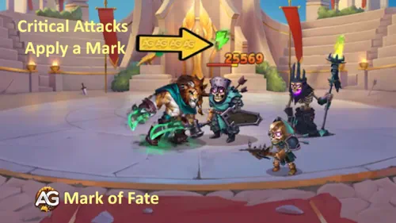
育成優先度: 高 - 運命の印はレオネル独自のエネルギー妨害ですが、クリティカルに依存します。まず王者の咆哮を強化し、その後PvPや長期戦のために高レベルを維持してください。
レオネルのRealmスキル - ヒーローウォーズ アライアンス
レオネルは新しいRealmゲームモードで歩兵部隊を強化する限定Realmスキルを持っています。これらのスキルは通常のPvPやキャンペーンバトルには適用されません — Realmのみで機能します。
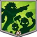
第1位 – 二刀
レオネルは獣の怒りと人間の狡猾さを合わせ持ち、指揮下の歩兵を鼓舞します。このスキルは全歩兵のクリティカルヒット率をスキルレベルに応じたパーセンテージで増加させます。数百の部隊がぶつかり合う大規模なRealm戦闘では、わずかなクリティカル率の上昇でも軍全体の総ダメージを劇的に増加させることができます — 特にレオネルのアイデンティティ全体がクリティカルストライクを中心に構築されているため。
- 効果：歩兵クリティカル率を%増加（スキルレベルに応じてスケール）
- タイプ：全歩兵部隊へのパッシブバフ
- キーワード：クリティカルヒット率、歩兵、バフ
育成優先度：非常に高い – こちらを先に育成してください。クリティカル率の増加は歩兵の全攻撃に汎用的に効果があり、最も安定して影響力の高いRealmスキルです。クリティカルが増えれば、敵タイプに関係なくあらゆる状況でダメージが増加します。
第2位 – 捕食者の影
レオネルに従う歩兵は彼の捕食者のような優雅さを真似しようとし、戦闘で戦術的優位を獲得します。歩兵の2回目ごとの攻撃はスピアマンとマークスマンに追加ボーナスダメージを与えます。ボーナスダメージのパーセンテージはスキルレベルに応じてスケールし、レオネルの歩兵部隊はRealmにおけるこれらの一般的な敵タイプに対してますます効果的になります。
- 効果：2回目の攻撃ごと：スピアマンに+%ダメージ、マークスマンに+%ダメージ（レベルに応じてスケール）
- タイプ：歩兵部隊への状況依存パッシブバフ
- キーワード：ボーナスダメージ、スピアマン、マークスマン、歩兵
育成優先度：高 – 二刀の後に育成してください。スピアマンとマークスマンへのボーナスダメージは価値がありますが、状況依存です — それらの特定の敵タイプに対してのみ機能します。二刀は汎用的な利点を提供するため、こちらはRealmでの2番目の優先事項となるべきです。
レオネルの最適スキン ヒーローウォーズ アライアンス
レオネルには現在デフォルトスキンのみが利用可能です。Realm限定ヒーローとして、追加スキンは今後のアップデートでリリースされる可能性があります。
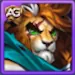
デフォルトスキン（俊敏性）
ステータスボーナス：俊敏性 +1,365
俊敏性の各ポイントは以下を付与：
- 物理攻撃 +2ポイント
- アーマー +1ポイント
- 物理攻撃 +1追加ポイント（俊敏性はレオネルのメインステータス）
俊敏性による物理攻撃：4,095
俊敏性によるアーマー：1,365
育成優先度：非常に高い – 俊敏性はレオネルのメインステータスです。3倍の物理攻撃（基本2 + メインステータスで追加1）とボーナスアーマーを付与するため、このスキンの最大化はあなたができる最もインパクトのある強化です。物理攻撃が増えると全スキルが強化されます — 捕食者の跳躍のダメージ増加、王者の咆哮のクリティカルバフ増強、影の刃のヒットがより致命的に。
レオネルのアーティファクト育成優先順位 ヒーローウォーズ アライアンス
レオネルのアーティファクトを正しい順序でアップグレードすることは、彼のクリティカルベースのダメージとエネルギー拒否ポテンシャルを最大化するために不可欠です。
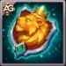
第1位 – ゴールドメインの紋章（武器アーティファクト）
ステータスボーナス：アーマー貫通 +32,040
効果：レオネルがアルティメットスキル（影の刃）を使用すると、チーム全体に9秒間ボーナスステータスを付与する効果が発動します。大量のアーマー貫通ステータスにより、レオネルの物理ダメージが敵の防御を切り裂き、影の刃と捕食者の跳躍からのすべてのヒットが大幅に効果的になります。
育成優先度：非常に高い – このアーティファクトを最初に最大化してください。アーマー貫通は、レオネルの高い素のダメージを敵に実際に与えるダメージに直接変換するステータスです。これがなければ、装甲タンクが彼のヒットを吸収してしまいます。アルティメット発動時のチーム全体バフにより、さらに価値が増します。
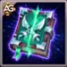
第2位 – 書物アーティファクト
ステータスボーナス：アーマー貫通 +10,680 | クリティカルヒット率 +2,967
効果：このアーティファクトはレオネルの最も重要な2つのステータスを強化します。追加のアーマー貫通は武器アーティファクトとスタックしてさらにダメージを増加させ、クリティカルヒット率は運命の刻印の発動頻度を直接増加させます。クリティカルが増えると敵へのエネルギードレインも増加します。
育成優先度：高 – 武器の後にアップグレードしてください。アーマー貫通とクリティカルヒット率の組み合わせにより、このアーティファクトはレオネルのダメージとエネルギー拒否ループに不可欠です。

第3位 – 俊敏性のリング（リングアーティファクト）
ステータスボーナス：俊敏性 +3,990
俊敏性による物理攻撃：11,970
俊敏性によるアーマー：3,990
効果：レオネルのメインステータスを強化し、全スキルダメージとアーマーを増加させます。俊敏性はメインステータスなので、各ポイントで物理攻撃3とアーマー1を付与します。これによりキットの全計算式がスケーリングされます — 影の刃、捕食者の跳躍、王者の咆哮すべてが高い物理攻撃の恩恵を受けます。
育成優先度：高 – 書物アーティファクトと並行してアップグレードしてください。物理攻撃のスケーリングがレオネルの4つのスキルすべてに直接供給され、ダメージと生存性の両方にバランスの取れた投資となります。
レオネルのグリフ育成優先順位
レオネルのグリフを正しい順序でアップグレードすることは、全ゲームモードでのクリティカルダメージ出力とエネルギー拒否を最大化する鍵です。
第1位 – 物理攻撃グリフ
物理攻撃はレオネルのキット全体の基盤です。彼のスキルすべてが物理攻撃でスケーリングします — 影の刃のバーストダメージから王者の咆哮のクリティカルバフ計算、捕食者の跳躍の壊滅的なシールド破壊ヒットまで。このステータスを増加させるとすべてが同時に強化されます。
レベル80ステータス：+8,340 物理攻撃
育成優先度：非常に高い – このグリフを最初に最大化してください。全スキルにわたるレオネルのダメージにとって最もインパクトのある単一のステータスです。
第2位 – 体力グリフ
前衛戦士として、レオネルは多くのダメージを受けます。体力は、複数の敵に運命の刻印をスタックし、より多くのクリティカルを着地させるのに十分な時間生存させます。ただし、彼の真の価値はタンクよりもダメージディーラーとしてなので、攻撃的ステータスほど重要ではありません。
レベル80ステータス：+122,800 体力
育成優先度：低 – 最後にアップグレードしてください。レオネルの生存性は素のHPよりも影の刃の無敵やチームサポートからもたらされます。まず攻撃的グリフに集中してください。
第3位 – クリティカルヒット率グリフ
クリティカルヒット率はレオネルにとって絶対に不可欠です。運命の刻印の発動頻度を直接制御するからです。クリティカル増加 = 敵へのエネルギードレイン増加 = 敵のアルティメット減少。王者の咆哮の300%クリティカルダメージ倍率ともシナジーがあり、各クリティカルヒットが信じられないほど強力になります。
レベル80ステータス：+4,170 クリティカルヒット率
育成優先度：非常に高い – 物理攻撃の直後にアップグレードしてください。このステータスはレオネルのエネルギー拒否戦略全体と莫大なクリティカルダメージ出力のトリガーです。
第4位 – アーマー貫通グリフ
アーマー貫通は、レオネルの物理ダメージが敵のアーマーに吸収されずに実際に敵に届くことを保証します。十分なアーマー貫通がなければ、高い素のダメージ数値でもタンキーな前衛ヒーローに対して大幅に減少します。
レベル80ステータス：+12,850 アーマー貫通
育成優先度：高 – 物理攻撃とクリティカルの後にアップグレードしてください。このステータスはダメージポテンシャルを実際に与えるダメージに変換し、PvPの装甲ターゲットに対して特に重要です。
第5位 – 俊敏性グリフ
俊敏性はレオネルのメインステータスであり、各ポイントで物理攻撃2 + アーマー1 + 追加物理攻撃1（メインステータスボーナス）を付与します。このグリフは攻撃と防御の両方にバランスの取れたブーストを同時に提供します。
レベル80ステータス：+2,110 俊敏性
- 俊敏性による物理攻撃：6,330
- 俊敏性によるアーマー：2,110
育成優先度：高 – アーマー貫通と並行してアップグレードしてください。物理攻撃の3倍スケーリングにより、このグリフはダメージと生存性の両方に対する堅実な投資となります。
ヒーローウォーズ アライアンスでレオネルをカウンターする方法
レオネルのクリティカルベースのエネルギードレインは壊滅的ですが、以下のヒーローには彼を効果的に封じ込めるツールがあります。

アイリスはレオネルに対する最も強力なカウンターの一つです。彼女のパッシブスキル神秘の契約により永久にデバフ免疫となり、敵が味方を弱体化させたり刻印を適用するたびに — まさにレオネルの運命の刻印が行うこと — アイリスはその敵の物理攻撃と魔法攻撃を（10%魔法攻撃 + 4,800）7秒間減少させることで反撃します。レオネルがクリティカルヒットで常に刻印を適用するため、アイリスは継続的に彼の物理攻撃を低下させ、キットのすべてのスキルを直接弱体化させます。これは壊滅的なフィードバックループを作り出します：レオネルがクリティカルを出すほど、彼は弱くなります。物理と魔法攻撃の最大レベル減少16,333により、アイリスはレオネルのダメージ出力を効果的に無力化し、運命の刻印のスタックが彼自身に不利に働かせます。
ヒーローウォーズ アライアンスにおけるレオネルのシナジー
レオネルはクリティカルヒット率を増幅し、攻撃的なプレイスタイルを報酬する味方と組み合わせると最も輝きます。

オヤはレオネルの最高のパートナーです。味方がクリティカルヒットを着地させるか敵のシールドを破壊するたびに回復します — どちらもレオネルが常に行うことです。さらに良いことに、オヤは回復を受けた味方のクリティカルヒット率を増加させ、自己強化ループを作り出します：レオネルがクリティカル → オヤが回復 → クリティカル率が上昇 → さらにクリティカル → 運命の刻印のスタックが増加 → さらに回復。このシナジーにより、レオネルは戦闘が長引くほど強くなる自己持続型のダメージマシンに変貌します。

ヤスミンは非常に高いクリティカルヒットダメージを持つ自然のアサシンです。両方のヒーローがクリティカルで活躍するため、レオネルと自然にシナジーがあります。王者の咆哮の共有バフがヤスミンに当たると（彼女が最も高い物理攻撃を持つ場合）、すでに致命的なクリティカルダメージがさらに壊滅的になります。一緒に、彼らは戦場の両側からの絶え間ないクリティカルストライクとエネルギードレインで敵を圧倒するデュアルアサシンコアを形成します。
2026年のレオネル最強チーム - Hero Wars: Alliance
チーム #1 分析：
これは現在のレオネルで最も強く、よく使われているメタチームの一つです。レオネルは前線でタンクを破壊する役割を持ち、ジュリアスのようなタンクやシールド中心の防衛相手に非常に強い圧力をかけます。グースとバーナは高い回復に加えてクリティカルヒットとエネルギー獲得を強化し、エイダンは前線のレオネルにさらなる回復とシールドを与え、ポラリスは高い魔法ダメージと敵のコントロールを担当します。このチームは強い攻撃を受け止めながら、レオネルが敵の前線を崩すための時間を十分に作れます。
私のバトルでも、このチームはクロウ入りの編成に非常に有効で、対策が難しいことが確認できました。
| レオネル - 2026年 最強チーム #1 | ||||
|---|---|---|---|---|
|
|
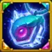 タリスマン2 |
|
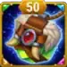 タリスマン1 |
タリスマン1 |
|
|
|
|
|
|
チーム #2 分析：
これは現在、レオネルの最も信頼性の高いメタ編成の一つです。レオネルは強力なタンクブレイカーとして先陣を切り、耐久力の高い前衛やシールド中心のチーム、特にジュリアスを倒すことに優れています。グースとバーナはチームを生存させながら、クリティカルヒット率とエネルギー獲得を強化します。エイダンは追加の回復とレオネルを守るシールドで前線を強化し、フォリオは壊滅的な魔法ダメージで弱った敵にとどめを刺します。
レオネルのその他のチーム ヒーローウォーズ アライアンス
- バーナ, ヤスミン, レオネル, オヤ, エレクトラ
- ファフニール, バーナ, ヤスミン, レオネル, エレクトラ
- グース, バーナ, レオネル, オヤ, ジュリアス
まとめ – レオネルガイド（ヒーローウォーズ アライアンス）
レオネルは、クリティカルダメージとエネルギー拒否を中心とした新鮮なプレイスタイルをもたらす、ヒーローウォーズ アライアンスへのユニークで強力な追加ヒーローです。最初のRealm限定ヒーローとして、Realmミッションでソウルストーンを集めることに投資する忍耐強いプレイヤーに報酬を与えます。彼のキット — 影の刃による無敵バーストダメージ、捕食者の跳躍によるシールド破壊力、王者の咆哮によるセルフバフのクリティカル増幅、運命の刻印による絶え間ないエネルギードレイン — により、PvPと長い戦闘の両方で恐るべき存在となります。
レオネルを最大限に活用するために：スキルアップグレードでは捕食者の跳躍と王者の咆哮を優先し、物理攻撃とクリティカルヒット率のグリフを最初に最大化し、ゴールドメインの紋章武器アーティファクトに投資し、オヤとヤスミンと組み合わせて壊滅的なシナジーを実現してください。適切なビルドとチームがあれば、レオネルは単独で敵のアルティメットを封じ込め、チームを勝利に導くことができます。

おすすめ動画
おすすめガイドで新しいスキルを探索しよう！


ご意見をお聞かせください！
レオネルガイドはいかがでしたか？わからないことがあったり、変更を提案したいことはありますか？Alexandre Gamesブログページのコメントセクションにぜひご参加ください。ご意見の表明、疑問の解消、提案の共有はご自由にどうぞ。
下のボタンをクリックして始めましょう：